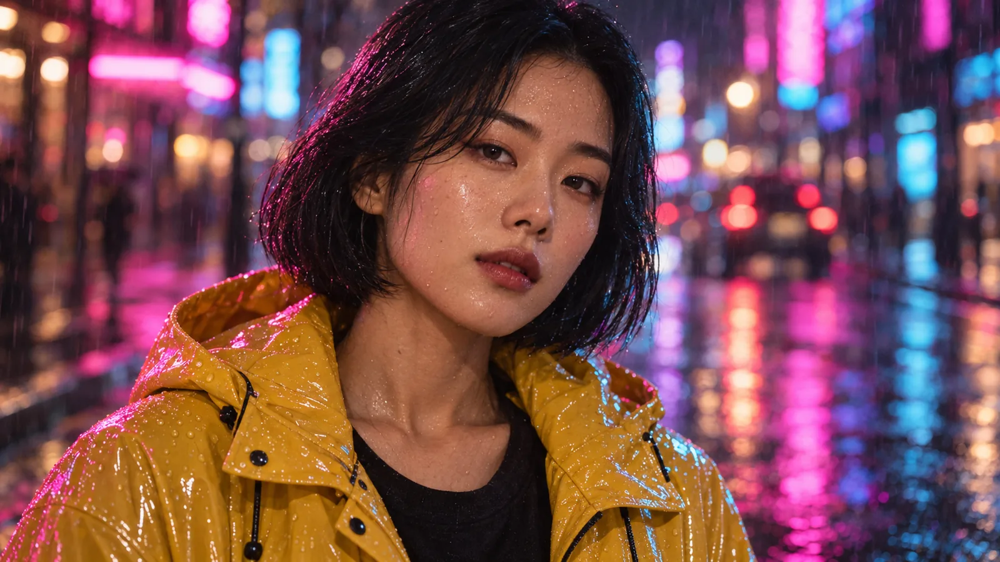

VIDEO SHOT GALLERY
샷의 이름을 알면 AI 에게 정확히 요청할 수 있어요.같은 주인공을 샷만 바꿔 찍은 예시로 차이를 보고, 영어 프롬프트를 바로 복사하세요.
영상 AI(Sora · Veo · Kling · Runway · Higgsfield 등)는 영어 촬영 용어를 가장 정확하게 알아들어요. 대상·장소를 바꾸면 프롬프트에 바로 반영돼요.
SHOT BUILDER
크기 · 앵글 · 무빙 · 렌즈 · 속도를 골라 한 문장 프롬프트로